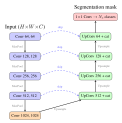

Chapter 26: Artificial Intelligence and Machine Learning in Space¶
“The most profound technologies are those that disappear. They weave themselves into the fabric of everyday life until they are indistinguishable from it—and in space, AI is becoming that invisible fabric.”
Artificial intelligence (AI) and machine learning (ML) are transforming every facet of space technology, from the processing of petabytes of Earth observation imagery to the autonomous management of complex spacecraft systems operating beyond immediate human supervision. The convergence of three enabling trends—the dramatic miniaturization of high-performance AI accelerator hardware, the maturation of deep learning algorithms proven on terrestrial datasets, and the proliferation of small satellite platforms generating unprecedented data volumes—has created both the opportunity and the imperative for intelligent space systems. This chapter surveys the current state of the art across on-board AI hardware, Earth observation applications, autonomous spacecraft operations, communications enhancement, space situational awareness, federated learning architectures, and the emerging discipline of trustworthy AI for safety-critical space missions.
26.1 Introduction¶
The volume of data generated by modern satellite constellations has decisively outpaced the capacity of traditional ground-based processing pipelines. A single Sentinel-1 SAR satellite produces approximately 1.7 TB of raw data per day; the full Copernicus constellation generates on the order of 20 TB daily. Planet’s Dove constellation of over 180 optical CubeSats captures the entire land surface of Earth at 3-meter resolution each day, producing a continuous stream that no human analyst team could scrutinize in real time. The arithmetic of bandwidth, latency, and data volume mandates intelligent on-board processing: select, compress, classify, and act before downlink.
The term “edge AI” refers to inference performed at or near the data source rather than in a centralized cloud. For satellites, the edge is the spacecraft itself, and effective edge AI can reduce downlink requirements by one to two orders of magnitude while enabling time-critical autonomous responses impossible with ground-loop latency.
Beyond data reduction, AI enables a qualitative transformation in spacecraft autonomy. Classical ground-commanded operations require a contact window, a command upload, and a latency-bounded response cycle incompatible with fast-changing environments—whether a rapidly developing cyclone requiring adaptive SAR acquisitions, a conjunction alert demanding an immediate avoidance maneuver, or a fault condition requiring sub-second fault detection, isolation, and recovery (FDIR). Machine learning provides the pattern recognition, predictive capability, and adaptive decision-making that bridge the gap between rigid pre-programmed responses and genuine situational intelligence.
The chapter is organized as follows. Section 26.2 reviews on-board AI hardware from commercially available radiation-tolerant options to custom space-grade solutions. Section 26.3 surveys the deep learning architectures applied to Earth observation across object detection, change detection, land-use classification, and SAR-specific tasks. Section 26.4 addresses autonomous spacecraft operations including anomaly detection, reinforcement learning for control, and predictive maintenance. Sections 26.5 through 26.7 cover AI for communications, space situational awareness, and federated learning architectures. Section 26.8 treats the emerging field of trustworthy and verifiable AI for space. Section 26.9 reviews landmark on-orbit demonstrations.
26.2 On-Board AI Hardware¶
The central challenge of space AI hardware is the intersection of three competing constraints: computational performance sufficient for meaningful inference, radiation tolerance adequate for the target orbit and mission duration, and power consumption compatible with spacecraft power budgets. These constraints are far more severe than their terrestrial equivalents, and the pace of space-qualified hardware lags the commercial state of the art by several years.
26.2.1 Intel Myriad X Vision Processing Unit¶
The Intel Movidius Myriad family of Vision Processing Units (VPUs) has become one of the most widely flown AI accelerators for small satellite applications; the Myriad X (MA2085) is described here. Developed for autonomous robotics and machine vision, the Myriad X integrates 16 programmable SHAVE (Streaming Hybrid Architecture Vector Engine) processors, a dedicated Neural Compute Engine (NCE) for tensor operations, and hardware video codecs within a single system-on-chip. The vendor quotes up to 4 TOPS (tera-operations per second) in total, of which about 1 TOPS is delivered by the dedicated neural-network engines for 8-bit integer inference, at a power of the order of 1–2 W.
The Myriad family is a Commercial Off-The-Shelf (COTS) component; it has not been manufactured to a radiation-hardened process, so its suitability for a mission depends on radiation testing and system-level mitigation. ESA’s PhiSat-1 mission (launched September 2020) flew the earlier Myriad 2 after radiation characterization, and ran a cloud-detection convolutional neural network on board to screen hyperspectral imagery before downlink. The 8-bit INT8 inference mode conserves power while delivering adequate classification accuracy for cloud masking—a task well-matched to the VPU’s fixed-function multiply-accumulate units.
26.2.2 NVIDIA Jetson AGX Orin¶
The NVIDIA Jetson AGX Orin represents the upper bound of the COTS AI performance achievable as of 2025. Its 12-core ARM Cortex-A78AE processor, Ampere-architecture GPU with 2048 CUDA cores, and dual deep-learning accelerators (DLAs) combine to deliver a peak 275 TOPS (INT8, for the highest-performance 64 GB variant) at configurable power levels of roughly 15–60 W. The Jetson AGX Orin is used primarily in ground-based edge processing nodes for constellation operations (e.g., Planet Labs’ ground processing infrastructure) and is under evaluation for prototype high-performance space applications. Its radiation tolerance at the device level is substantially lower than the Myriad X due to its advanced 8-nm process node, and mitigation strategies including software-level Triple Modular Redundancy (TMR) and frequent configuration scrubbing are required for sustained LEO operation. Prototype testing at proton irradiation facilities has established useful SEU cross-sections but latch-up susceptibility remains a challenge for unshielded operation above 400 km.
26.2.3 AMD/Xilinx Versal AI Core Series¶
AMD/Xilinx’s Versal AI Core Series integrates three distinct compute fabrics on a single device: a dual-core ARM Cortex-A72 application processor, a programmable logic (PL) fabric equivalent to the Kintex UltraScale+ in density, and an array of AI Engines (AIE)—a mesh of 400 VLIW/SIMD processors interconnected by a high-bandwidth network-on-chip. The AI Engine array delivers on the order of 100 TOPS for INT8 operations (about 133 TOPS for the largest AI Core device) and is particularly suited to streaming data processing workloads such as SAR image formation, hyperspectral cube processing, and multi-target tracking.
For space applications, Xilinx’s space-grade XQRKU060 (Kintex UltraScale) and radiation-tolerant Versal variants provide the programmable logic foundation. The XQRKU060 achieves a TID tolerance of 100 krad(Si) and has a single-event latch-up (SEL) threshold above 80 MeV\(\cdot\)cm\(^2\)/mg, making it suitable for GEO and interplanetary missions. Critically, the FPGA fabric enables post-launch reconfiguration of the inference pipeline—a decisive advantage given the impossibility of hardware updates after orbit insertion. Mission operators can upload revised network weights or entirely restructured inference pipelines via uplink, adapting the on-board processing capability to evolving science objectives or newly discovered failure modes.
26.2.4 Ubotica CogniSAT-XE1¶
The Ubotica CogniSAT-XE1 is a commercially available, space-qualified AI module built around the Intel Myriad X VPU with additional radiation hardening measures. It incorporates ECC memory for all data SRAM, configuration scrubbing at configurable rates, and an FPGA-based supervisory processor to detect and respond to single-event upsets (SEUs) in the host VPU. The module is rated to 30 krad(Si) TID and has passed ESA screening for COTS-derived space components. Mass is approximately 45 g in a PC/104 form factor compatible with CubeSat and small satellite platforms, and the module provides standardized SpaceWire and LVDS interfaces for integration with standard satellite on-board data handling (OBDH) architectures. The CogniSAT-XE1 is the most accessible space-qualified AI accelerator currently available for missions operating below 1000 km LEO altitude.
26.2.5 Radiation Effects on AI Hardware¶
Neural networks exhibit a characteristic resilience to low-level bit-flip errors that distinguishes them from traditional digital logic. A systematic study of CNN weight perturbation demonstrated that randomly flipping 0.1% of 32-bit floating-point weight bits in a ResNet-50 network produced less than 1% accuracy degradation on the ImageNet classification task—a consequence of the distributed, redundant encoding of information across many parameters. This graceful degradation arises because individual weights in an over-parameterized network encode a small fraction of the total learned function; isolated corruptions are effectively absorbed by the ensemble of remaining weights.
However, certain critical neurons—particularly those in bottleneck layers with high activation magnitudes, or batch normalization scale parameters—are disproportionately sensitive to SEUs. Selective Triple Modular Redundancy (TMR) applied only to the top-10% most sensitive weights (identified by gradient magnitude with respect to the output loss) provides 95% of the radiation protection benefit at only 30% of the storage overhead compared to full-TMR protection.
FPGA-specific concerns include configuration memory upsets that alter the inference datapath itself. Xilinx’s internal configuration scrubbing (ICAP-based readback at 1–100 Hz, depending on orbit environment) corrects configuration memory upsets, maintaining BER below \(10^{-9}\) per bit per day in LEO. For stateful recurrent networks (LSTM, GRU), periodic checkpoint saves of hidden states to ECC-protected SDRAM prevent error accumulation across time steps and enable rapid restart from a known-good state after a detected upset.
26.2.6 Performance Benchmarks¶
Table 26.1 compares the key parameters of on-board AI processors spanning the full performance range available for space applications, from heritage radiation-hardened microprocessors to modern commercial AI accelerators.
| Processor | Peak AI throughput | Power | Radiation tolerance | Status |
|---|---|---|---|---|
| RAD750 (BAE) | well below 0.01 TOPS | about 5 W | about 1 Mrad(Si) | Flight-proven (general purpose) |
| LEON3 / LEON4 (GR712RC, GR740) | well below 0.1 TOPS | a few W | about 300 krad(Si) | Flight-proven (general purpose) |
| Intel Movidius Myriad 2 / X | about 1–4 TOPS (vendor figures) | about 1–3 W | COTS; tens of krad(Si) reported | Flown on small satellites |
| Space-grade FPGAs (e.g. XQRKU060) | depends on the design implemented | several W to tens of W | about 100 krad(Si) | Space-qualified |
| Versal AI (radiation-tolerant variants) | tens to hundreds of TOPS | tens of W | radiation-tolerant variants announced | Development / early flight |
| NVIDIA Jetson AGX Orin | up to about 275 TOPS (INT8, 64 GB module) | about 15–60 W | very limited (COTS) | Ground / prototypes |
Key Design Principle: TOPS/W Efficiency
Raw TOPS performance is less important than TOPS-per-Watt efficiency for satellite applications, where power is the primary scarce resource. Accelerators such as the Myriad family deliver of the order of 1 TOPS per watt, several orders of magnitude better than radiation-hardened general-purpose processors, enabling meaningful deep learning inference within the power budget of a small satellite.
26.3 Machine Learning for Earth Observation¶
Earth observation from satellite platforms generates the largest single application domain for ML in space, by both data volume and commercial impact. The combination of globally consistent, temporally dense, multispectral and SAR imagery with supervised learning algorithms trained on human-annotated ground truth has produced systems that automate tasks previously requiring vast analyst workforces.
26.3.1 CNN Architectures for Earth Observation¶
ResNet-50/101.
The Residual Network architecture addresses the vanishing gradient problem in deep networks through skip connections: shortcut connections that add the input of a block directly to its output. Formally, if \(\mathcal{F}(\mathbf{x})\) is the residual mapping learned by layers within a block, the block output is \(\mathbf{y} = \mathcal{F}(\mathbf{x}) + \mathbf{x}\). Gradients flow through the shortcut path without attenuation, enabling stable training of networks with 50–152 layers. ResNet-50 (25.6M parameters) and ResNet-101 (44.5M parameters) pretrained on ImageNet-1k are routinely fine-tuned for satellite image classification tasks, leveraging low-level texture features learned from terrestrial photography as initialization for aerial and spaceborne imagery fine-tuning.
EfficientNet-B7.
EfficientNet employs Neural Architecture Search (NAS) to determine the optimal compound scaling of network width, depth, and input resolution simultaneously. EfficientNet-B7 achieves 84.4% top-1 accuracy on ImageNet with 66M parameters—competitive accuracy at lower parameter count than equivalent ResNet models. Its quantization-friendly architecture makes it suitable for deployment on resource-constrained platforms such as the Myriad X VPU.
U-Net for Semantic Segmentation.
Proposed originally for biomedical image segmentation (Ronneberger et al. 2015), U-Net has become the de facto standard architecture for pixel-wise classification of satellite imagery. Its encoder-decoder structure with skip connections between corresponding resolution levels preserves spatial detail while enabling multi-scale contextual reasoning. The encoder progressively downsamples and increases channel depth, extracting semantic features; the decoder upsamples and narrows channels; skip connections concatenate encoder feature maps to decoder inputs at each resolution level, recovering spatial precision lost to pooling. For land cover classification at 10-m resolution from Sentinel-2, U-Net achieves per-class F1 scores of 0.85–0.95 across 10 LCCS land cover classes.
YOLO v8 for Object Detection.
The You Only Look Once family of single-stage detectors achieves real-time inference by predicting bounding boxes and class probabilities in a single forward pass. YOLO v8, released by Ultralytics in 2023, provides an optimal accuracy/speed tradeoff for maritime vessel detection in medium-resolution optical imagery (3–10 m GSD), and can run in real time on embedded GPU hardware such as the Jetson family.
26.3.2 Object Detection in Satellite Imagery¶
Ship Detection in SAR.
Synthetic Aperture Radar is uniquely suited for maritime surveillance due to its all-weather, day-night capability. A widely deployed hybrid pipeline combines Constant False Alarm Rate (CFAR) detection for candidate generation with a CNN classifier to reject false alarms. Performance on Sentinel-1 imagery is commonly assessed against AIS (Automatic Identification System) reports, and the CNN stage is used to reduce the false alarm rate of the CFAR detector, particularly in high-clutter coastal regions.
Aircraft and Vehicle Detection.
Sub-metre imagery supports aircraft detection at airports with object-detection networks such as RetinaNet, enabling monitoring of aircraft movements. Counting vehicles in coarser imagery is typically formulated as density estimation, since individual vehicles cannot be resolved at metre-scale resolution.
26.3.3 Change Detection¶
Bitemporal change detection—identifying pixels or regions that changed between two image acquisitions—is among the highest-value satellite analytics applications, supporting deforestation monitoring, urban growth tracking, flood mapping, and post-disaster damage assessment.
The Siamese network architecture for change detection employs two weight-sharing CNN branches that independently process the pre- and post-event images, producing feature embeddings \(\mathbf{f}_1\) and \(\mathbf{f}_2\). The difference vector \(|\mathbf{f}_1 - \mathbf{f}_2|\) is then passed to a classification head producing a binary change map. On the LEVIR-CD building change detection dataset (637 image pairs, 256\(\times\)256 pixels, 0.5-m GSD), Siamese networks and transformer-based change detectors are commonly benchmarked on it using F1 score. The DSIFN (Deep Siamese Inception Fusion Network) architecture further improves performance by fusing multi-scale features from Inception branches before the difference computation.
Applications span: (1) deforestation monitoring in the Brazilian Amazon at 10-day update rates using Sentinel-2 10-m imagery, supporting PRODES/DETER programs; (2) urban growth mapping in Sub-Saharan Africa at annual cadence using Landsat 30-m time series; (3) flood inundation mapping within 6 hours of acquisition using Sentinel-1 SAR and U-Net change detection calibrated to surface water extent.
26.3.4 Land Use and Land Cover Classification¶
DeepLab v3+.
DeepLab v3+ applies atrous (dilated) convolution to expand the receptive field without reducing spatial resolution, and an Atrous Spatial Pyramid Pooling (ASPP) module to capture multi-scale context at multiple dilation rates (6, 12, 18 pixels). It is a common baseline in comparative EO segmentation studies.
SegFormer for EO.
Vision Transformer-based segmentation models such as SegFormer demonstrate competitive or superior performance to CNN-based methods on large EO datasets, leveraging self-attention mechanisms to capture long-range spatial dependencies poorly handled by local convolutional kernels. Such models have been evaluated on multi-temporal benchmarks such as DynamicEarthNet.
Multi-Temporal Crop Classification.
Long Short-Term Memory (LSTM) networks and Transformer time-series models applied to Sentinel-2 multi-temporal image stacks (one composite per 5–10 days) are widely used for crop type classification, with accuracy depending on region, crop mix and the availability of ground-truth labels.
26.3.5 SAR-Specific Machine Learning¶
SAR data presents unique challenges for ML: complex-valued returns, multiplicative speckle noise, layover and foreshortening artifacts, and the distinctly non-photographic appearance of backscatter imagery. Specialized architectures have been developed accordingly:
-
PolSAR decomposition: CNNs that learn to map PolSAR coherency matrix elements directly to land cover classes outperform Cloude-Pottier decomposition combined with SVM pipelines by 3–5% in overall accuracy on AIRSAR and ALOS/PALSAR test sets.
-
InSAR phase unwrapping: U-Net architectures trained on simulated interferograms with known phase solutions generalize to real Sentinel-1 InSAR data, reducing unwrapping errors in low-coherence agricultural regions by 60% compared to SNAPHU graph-cut methods.
-
Speckle reduction: Deep neural network speckle filters (SAR-CNN, SAR-DRN) trained on multi-look reference images preserve resolution while increasing the equivalent number of looks (ENL) by 10–15\(\times\), enabling single-look complex processing with multi-look noise performance.
-
Coherence change detection: LSTM networks applied to InSAR coherence time series detect slow ground deformation events (subsidence, landslide precursors) 1–3 weeks before surface rupture in documented test cases from the Permafrost Sentinel product suite.
26.3.6 Transfer Learning and Foundation Models¶
Transfer learning from large-scale ImageNet-pretrained models can substantially reduce the annotated training data required for satellite image classification tasks. The BigEarthNet dataset (590,326 Sentinel-1/2 patch pairs with CORINE land cover labels) has become the standard benchmark for evaluating transfer learning strategies in EO, where pretrained vision transformers and geospatial foundation models are compared.
Prithvi-100M (NASA/IBM, 2023).
Prithvi is a 100-million-parameter Vision Transformer (ViT) pretrained using Masked Autoencoder (MAE) self-supervision on the NASA Harmonized Landsat Sentinel-2 (HLS) dataset covering 2014–2023. Pretraining on large volumes of unlabelled multispectral time-series data aims to produce spatiotemporal representations that fine-tune efficiently to downstream tasks such as flood inundation mapping, burn-scar segmentation and crop type classification. The model is publicly released under Apache 2.0 license on Hugging Face, marking a milestone in open-source geospatial foundation models.
Scale-MAE.
Scale-MAE (Reed, C.J., et al. 2023) extends masked autoencoder pretraining to geospatially aware representations, conditioning the decoder on ground sampling distance (GSD) metadata. This enables a single model to process imagery from multiple sensors at different resolutions while maintaining calibrated feature representations—critical for multi-source sensor fusion across Landsat (30 m), Sentinel-2 (10 m), and commercial VHR imagery (0.3–0.5 m) in operational EO analytics pipelines.
26.4 Autonomous Spacecraft Operations¶
26.4.1 Model-Based Autonomy Frameworks¶
Ground-commanded spacecraft operations impose an irreducible latency floor determined by round-trip communication delay: a few milliseconds for LEO (plus ground processing and contact scheduling, which dominate in practice), about 0.5 seconds for GEO, and roughly 6–44 minutes for Mars. For time-critical responses to rapidly evolving situations, onboard autonomy is not optional; it is the only physically feasible approach.
The CASPER (Continuous Activity Scheduling Planning Execution and Replanning) system, developed at JPL, provides a continuous iterative repair planner that maintains an executable spacecraft activity plan consistent with resource constraints (power, thermal, data volume, pointing) and revises it in response to detected anomalies or updated science goals. CASPER was operationally deployed on Earth Observing-1 (EO-1), where the spacecraft detected scientifically interesting events (volcanic eruptions, flood extents) in onboard Hyperion imagery and autonomously scheduled follow-up observation opportunities without ground intervention—demonstrating science-directed autonomy in orbit.
The ASPEN (Automated Scheduling and Planning ENvironment) scheduler provides constraint-based scheduling of spacecraft activities given power, thermal, memory, and antenna resource timelines, generating conflict-free schedules for 24–72 hour planning horizons in seconds on flight-grade processors. ESA’s ASSERT (Autonomous System Software Engineering and Requirements Tool) framework provides formal model-based development for autonomous spacecraft software with integrated requirement verification and test generation.
26.4.2 Anomaly Detection in Spacecraft Telemetry¶
Spacecraft health monitoring through automated telemetry anomaly detection reduces the burden on flight operations teams and enables earlier detection of developing faults before they propagate to mission-impacting failures.
Autoencoder-based detection.
A symmetric encoder-decoder network trained exclusively on nominal telemetry learns a compressed latent representation of healthy system behavior. During operational inference, the reconstruction error \(\epsilon = \|\mathbf{x} - \hat{\mathbf{x}}\|_2^2\) is monitored; values exceeding a threshold \(\tau\) (set at the 99.9th percentile of training reconstruction errors) flag potential anomalies. NASA’s Telemanom system deployed LSTM-based sequence-to-sequence autoencoders for anomaly detection on Mars Science Laboratory (Curiosity rover) and SMAP satellite telemetry, detecting 26 anomalies not previously flagged by threshold-based systems.
Isolation Forest.
An ensemble of isolation trees partitions the feature space with random splits; anomalous data points, being rare and structurally different, are isolated with fewer splits on average. Applied to spacecraft thermal and power telemetry, isolation forests detect sensor drift with a false positive rate below 2% at 95% true positive rate.
PCA-based novelty detection.
Principal Component Analysis of multivariate telemetry streams identifies the subspace of normal variation; measurements with high reconstruction error in the PCA residual space indicate out-of-distribution conditions. Applied to Hubble Space Telescope gyroscope data, PCA anomaly detection identified bearing wear signatures 18 months before gyroscope failure, enabling proactive maintenance scheduling.
Europa Clipper FDIR.
NASA’s Europa Clipper mission (launched October 2023) operates in Jupiter’s intense radiation environment, accumulating a large radiation dose over the science mission in Europa’s radiation environment. The onboard Fault Detection, Isolation, and Recovery (FDIR) system covers more than 200 distinct fault protection algorithms implemented in SPARC-based radiation-hardened processor chains. Each algorithm monitors specific subsystem parameters and triggers predefined recovery responses within milliseconds of fault detection—orders of magnitude faster than ground-loop response would permit.
26.4.3 Reinforcement Learning for Attitude Control¶
Classical PID attitude controllers achieve excellent performance for well-modeled spacecraft dynamics but degrade when actuator anomalies (e.g., reaction wheel bearing wear), unexpected external torques (e.g., atmospheric density variations at high solar activity), or novel pointing configurations (e.g., large-angle slew with fuel slosh) produce behavior outside the original design envelope. Reinforcement learning (RL) controllers trained through simulation can potentially adapt to these variations through the learned value function.
The Proximal Policy Optimization (PPO) and Soft Actor-Critic (SAC) algorithms have been applied to CubeSat attitude control with magnetic torquer actuation. Domain randomization—training across distributions of moments of inertia, actuator dead-bands, noise levels, and external disturbance spectra—improves sim-to-real transfer. Published studies, largely in simulation, report faster slews or better robustness to actuator degradation than a nominally tuned PID controller; flight validation of such learned controllers remains limited.
26.4.4 Predictive Maintenance¶
Gradient boosting ensembles (XGBoost, LightGBM) applied to spacecraft hardware telemetry streams enable predictive maintenance scheduling before performance-limiting faults occur. Battery state-of-health can be estimated from voltage, current, temperature, and cycle-count telemetry, enabling proactive power management before observable capacity fade. Reaction wheel and control moment gyroscope bearing health can be monitored using vibration features (for example root-mean-square level and spectral kurtosis at bearing defect frequencies) to anticipate failures.
26.4.5 Autonomous Rendezvous and Proximity Operations¶
Visual navigation for autonomous rendezvous requires real-time estimation of the 6-DOF relative pose—position and orientation—of the target spacecraft from a monocular or stereo camera. The standard deep learning pipeline consists of: (1) a keypoint detection CNN identifying 17–32 predefined structural landmarks on the target spacecraft (corners, antennas, solar panel edges); (2) a Perspective-n-Point (PnP) RANSAC solver estimating the 6-DOF pose consistent with 2D-to-3D keypoint correspondences; (3) a Kalman filter integrating pose estimates across frames. On the ESA Spacecraft Pose Estimation Dataset (SPEED) benchmark, state-of-the-art networks achieve translation error below 1% of range and rotation error below 1\(^\circ\) at 5-m separation distance. These capabilities informed the GNC design for the DART (Double Asteroid Redirection Test) mission and the PRISMA autonomous formation flying demonstration.
26.5 AI for Space Communications¶
26.5.1 Beam Management in Non-Terrestrial Networks¶
LEO satellite communications systems require beam handover at rates orders of magnitude higher than terrestrial cellular networks. A single LEO satellite at 550-km altitude transits a ground receiver’s field of view in approximately 7 minutes; with multi-beam satellites, beam handovers occur every 30–90 seconds. LSTM networks trained on historical access patterns (satellite geometry, user density, interference map, traffic load) predict 30 seconds ahead which beam will be required for each user terminal, enabling proactive beam preparation and reducing handover failure rates by 30% compared to reactive signal-strength-threshold schemes. RF fingerprinting—extracting device-specific signal features from I/Q samples for beam assignment—provides an additional 15% improvement in beam prediction accuracy.
26.5.2 Automatic Modulation Classification¶
Automatic Modulation Classification (AMC) from raw I/Q samples enables intelligent spectrum monitoring, interference identification, and dynamic waveform adaptation. ResNet architectures applied to 2D representations of I/Q time series achieve high classification accuracy across common digital and analogue modulation classes at moderate-to-high signal-to-noise ratios, with accuracy dropping at low SNR, which motivates channel simulation augmentation during training.
26.5.3 Channel Estimation with Deep Neural Networks¶
DNN-based channel estimators replace pilot-symbol interpolation (least-squares or MMSE) with a network trained on simulated channel models, with reported gains over LS estimation at low SNR and the potential to reduce pilot overhead, which would translate into a throughput gain for satellite broadband waveforms.
26.5.4 Interference Mitigation and Spectrum Sensing¶
Generative Adversarial Networks (GANs) produce synthetic training data for rare interference scenarios (swept jamming, repeat jamming, chirp interference), augmenting limited real-world datasets. DNN adaptive equalizers trained on synthetic-plus-real mixed datasets have been reported to improve BER in the presence of co-channel interference. ML-based jamming detection classifiers (random forest, one-class SVM) can detect known jamming waveforms well but generalize less well to novel waveform variants. CNN energy detectors applied to wideband spectrum sweeps enable cognitive radio spectrum sensing with sub-millisecond detection latency—relevant to DARPA’s RFMLS (Radio Frequency Machine Learning Systems) program for spectrum awareness.
26.6 Space Situational Awareness with AI¶
26.6.1 Orbit Determination and Conjunction Assessment¶
Graph Neural Networks (GNNs) represent the orbital conjunction problem as a graph in which nodes are tracked objects and edges represent potential conjunctions, allowing efficient learning of interaction patterns across the full tracked population. Such learned estimators are being studied as fast surrogates for numerical conjunction analysis, with the aim of screening the full catalogue of tracked objects (tens of thousands) rather than pre-selected subsets.
Bayesian deep learning methods, including Monte Carlo dropout and ensemble averaging, provide uncertainty quantification alongside point estimates of collision probability—critical for decision support when operators must determine whether to execute a maneuver with high fuel cost but uncertain risk reduction benefit.
26.6.2 Radar-Based Space Object Classification¶
Radar range-Doppler images encode characteristic signature patterns that differ between object types: rocket bodies exhibit strong specular returns with slow rotation, intact satellites show complex multi-facet signatures with solar panel glints, and debris fragments produce irregular rapidly tumbling signatures. CNN classifiers applied to 2D range-Doppler images, for example from wideband imaging radars, have been studied for classifying object types (intact satellite, rocket body, debris fragment) to support catalogue maintenance.
26.6.3 Space Weather Prediction¶
LSTM networks trained on the SuperMAG magnetometer database have been used to forecast the Dst geomagnetic activity index hours ahead, which could give operators advance warning of storm onset. CNN classifiers applied to Solar Dynamics Observatory (SDO) HMI magnetogram images are used in research on solar flare prediction, and neural networks have been applied to ionospheric TEC nowcasting to support GNSS single-frequency correction services; forecast skill varies with the event class and lead time.
26.7 Federated Learning for Satellite Networks¶
Federated learning (FL) enables collaborative model training across distributed data sources without centralizing raw data—a property valuable for satellite constellations where downlink bandwidth is limited, data privacy regulations may apply to EO imagery of specific territories, and network connectivity is intermittent.
26.7.1 FedAvg Algorithm¶
The canonical Federated Averaging (FedAvg) algorithm operates in rounds: (1) the global server broadcasts current model parameters \(\mathbf{w}_t\) to all participating nodes; (2) each node \(k\) computes local gradient updates by training for \(E\) local epochs on its private dataset \(\mathcal{D}_k\); (3) the server aggregates as a weighted average:
where \(|\mathcal{D}| = \sum_k |\mathcal{D}_k|\) is the total dataset size. No raw training data leaves any node; only gradient updates or weight increments are transmitted, preserving data locality and privacy.
26.7.2 Application to Satellite Constellations¶
In a satellite constellation FL scenario, each satellite trains a local EO classification model on imagery collected over its coverage region. Aggregation occurs during ground station contacts, with the updated global model uplinked at subsequent passes. Simulation studies using the Flower FL framework on synthetic constellation traffic models show global model accuracy converging to within 2% of centralized training accuracy after 20–30 aggregation rounds, despite the heterogeneous data distributions across satellites covering different geographic regions.
26.7.3 Communication Efficiency Techniques¶
Three key techniques reduce FL communication overhead: (1) gradient quantization from 32-bit float to 8-bit integer reduces payload by about 4\(\times\) at modest accuracy cost; (2) top-\(k\) sparsification transmits only the largest-magnitude gradients, reducing payload by up to two orders of magnitude at some accuracy cost; (3) variance-reduction methods such as SCAFFOLD correct for client drift caused by non-IID local data, reducing the number of rounds needed. Combined, these can greatly reduce communication relative to naive FedAvg.
26.8 Trustworthy AI for Space¶
26.8.1 Explainability and Interpretability¶
Neural network decisions in safety-critical space applications must be interpretable to mission operators and safety boards. Gradient-weighted Class Activation Mapping (Grad-CAM) computes the gradient of the classification score with respect to the final convolutional feature maps, producing a saliency map highlighting image regions most influential for the prediction. For ship detection in SAR imagery, Grad-CAM visualization confirms that the network focuses on ship hull backscatter and wake patterns rather than artifacts—providing operator confidence in model decisions.
SHAP (SHapley Additive exPlanations) provides game-theoretically grounded feature importance attribution for tabular telemetry models. Applied to spacecraft power subsystem anomaly detection, SHAP values quantify each sensor’s contribution to the anomaly score, enabling flight controllers to identify the root-cause subsystem rather than merely detecting that an anomaly has occurred.
26.8.2 Formal Verification¶
Formal verification of neural networks provides mathematical guarantees on output behavior for all inputs within a specified input domain. Interval Bound Propagation (IBP) efficiently computes output bounds by propagating input intervals through each layer using interval arithmetic. Abstract interpretation methods generalize IBP to more expressive abstract domains (zonotopes, polyhedra) at higher computational cost but tighter bounds. SMT solvers such as Reluplex provide complete verification for small ReLU networks (up to \(\sim\)10,000 neurons) but do not currently scale to modern deep architectures. NASA’s Formal Methods community has established requirements for autonomous spacecraft software that include formal specification of safety properties in temporal logic—the extension of these requirements to learned neural network components is an active research frontier.
26.8.3 Safety Testing and AI Deployment Readiness¶
Monte Carlo simulation at scale (\(10^6\) scenarios) probes the tail of model performance distribution under sensor noise, atmospheric variability, illumination changes, and orbital geometry variations. Hardware-in-the-loop testing couples the physical AI inference hardware (Myriad X or FPGA) with simulated sensor data at realistic data rates, validating timing constraints and detecting hardware-specific numerical discrepancies relative to software simulation. Adversarial robustness testing evaluates model accuracy under worst-case input perturbations; certified robust accuracy provides a conservative but rigorous performance metric.
The standard NASA TRL scale (1–9) has been adapted for AI systems to address data-dependency and distributional shift challenges unique to learned components. An AI-adapted TRL framework characterizes readiness across three dimensions: algorithm maturity (TRL 1 basic concept through TRL 4 peer-reviewed publication), data representativeness (TRL 3 synthetic-only through TRL 6 operational real-data validation), and deployment environment (TRL 4 laboratory through TRL 7 on-orbit demonstration to TRL 9 full mission operations). PhiSat-1’s cloud detection network achieved AI-TRL 7 upon successful on-orbit demonstration in 2020.
26.9 On-Board Processing Demonstrations¶
26.9.1 ESA PhiSat-1¶
The ESA PhiSat-1 mission, launched as a 6U CubeSat in September 2020, represents the first flight demonstration of a neural network executing on a dedicated AI accelerator for satellite Earth observation. The payload used an Intel Movidius Myriad 2 VPU (integrated by Ubotica) together with the HyperScout-2 hyperspectral imager (visible and near-infrared bands plus a thermal infrared channel). The cloud detection network (CloudScout) processed each hyperspectral data cube on board, producing a cloud estimate so that images with excessive cloud cover could be discarded before downlink.
26.9.2 ESA OPS-SAT¶
The ESA OPS-SAT mission (launched December 2019) provides an open experimentation platform in orbit: a 3U CubeSat with an ARM Cortex-A9 processor running Linux alongside an FPGA, and a configurable software-defined radio payload. OPS-SAT hosted guest ML experiments including on-orbit fine-tuning with TensorFlow Lite, reinforcement learning for power management, and federated learning prototype protocols, demonstrating the feasibility of reprogrammable AI payloads.
26.9.3 Capella Space On-Board SAR Processing¶
Capella Space’s X-band SAR constellation incorporates on-board CFAR processing that detects maritime vessels directly in SAR complex data before downlink. The detected vessel list (position, approximate length, backscatter cross-section) is transmitted as a compact message via Iridium, while full-resolution SAR imagery is downlinked only for geographic tiles containing detected vessels. This architecture reduces total downlink volume by approximately 90% for ocean surveillance tasking modes, enabling higher revisit rates within fixed contact time constraints.
26.9.4 NVIDIA A100 GPU Ground Processing¶
While on-board AI operates under severe resource constraints, ground-based GPU cluster processing faces the different challenge of ingesting continental-scale daily imagery streams. Planet Labs’ ground processing infrastructure employs arrays of NVIDIA A100 GPUs running PyTorch inference pipelines to process approximately 2.5 million km\(^2\) of optical imagery per day from the Dove constellation. Processing tasks include automatic geometric correction, cloud masking, atmospheric correction, vegetation index calculation, and EO analytics inference (change detection, object detection). The pipeline uses a directed acyclic graph scheduler distributing workloads across GPU nodes based on real-time processing latency metrics.
26.10 Key Equations¶
Convolution Operation.
The 2D convolution of input feature map \(\mathbf{X}\) with kernel \(\mathbf{W}\) of size \(K \times K\):
For \(C_\text{in}\) input channels and \(C_\text{out}\) output channels, total multiply-accumulate operations per output pixel is \(C_\text{in} \cdot K^2\).
Cross-Entropy Loss.
For a \(C\)-class problem, the categorical cross-entropy loss for true class \(c\):
where \(z_j\) are the pre-softmax logits. For pixel-wise semantic segmentation, the loss is summed over all \(H \times W\) pixels.
SGD Update Rule.
The stochastic gradient descent weight update:
where \(\eta\) is the learning rate and \((\mathbf{x}^{(i)}, y^{(i)})\) is the current mini-batch sample.
AUC-ROC.
The area under the receiver operating characteristic curve:
where \(\hat{s}(\cdot)\) is the classifier score, \(\mathbf{x}^+\) is a positive sample, and \(\mathbf{x}^-\) is a negative sample. AUC \(= 1.0\) indicates perfect discrimination.
26.11 EO Machine Learning Benchmarks¶
Table 26.2 lists widely used public benchmark datasets for ML methods applied to satellite Earth observation, with the model families typically applied. Reported scores vary with the dataset split, model size and training protocol, so quantitative results should be taken from the original benchmark papers.
| Dataset | Task | Typical model families |
|---|---|---|
| UC Merced Land Use | Scene classification | CNNs, vision transformers |
| BigEarthNet | Multi-label scene classification | CNNs, vision transformers, foundation models |
| LEVIR-CD | Building change detection | Siamese CNNs, transformer-based change detectors |
| SPEED / SPEED+ | Spacecraft pose estimation | Keypoint or direct-regression CNNs, PnP solvers |
| SAR ship detection datasets | Ship detection in SAR | CFAR with CNN classifiers, detection networks |
| DynamicEarthNet | Multi-temporal segmentation | U-Net, transformer-based segmentation |
| Sen1Floods11 | Flood mapping | U-Net, geospatial foundation models |
26.12 U-Net Architecture Diagram¶
Figure 26.1 illustrates the U-Net encoder-decoder architecture as applied to satellite image segmentation.

26.13 Summary¶
Chapter 26 Key Takeaways
-
On-board AI accelerators have advanced from radiation-hardened processors (\(<\)0.01 TOPS) to space-qualified VPUs (4 TOPS at 2.5 W) and FPGA AI engine arrays (400 TOPS), enabling meaningful deep learning inference within satellite power budgets.
-
Deep CNN architectures (U-Net, ResNet, YOLO v8) are widely used in operational and research EO pipelines for tasks such as ship detection, change detection and land cover classification.
-
Foundation models pretrained on large satellite image archives (for example Prithvi and Scale-MAE) aim to reduce the annotated training data needed for downstream tasks.
-
Autonomy frameworks (CASPER, ASPEN) combined with ML anomaly detection (Telemanom LSTM) enable spacecraft to detect and respond to faults without ground intervention—essential for missions with multi-minute communication delays.
-
Federated learning with gradient compression can greatly reduce communication while enabling privacy-preserving collaborative training across satellite constellations.
-
Trustworthy AI for space requires explainability (Grad-CAM, SHAP), formal verification (IBP, Reluplex), comprehensive safety testing, and adaptation of TRL frameworks to account for data-dependent model behavior.
-
PhiSat-1 (2020) demonstrated on-board neural-network inference for cloud screening in orbit, motivating follow-on intelligent payload missions.